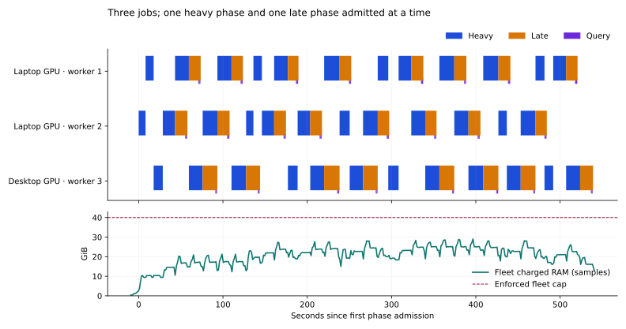

PASSED · 8 October 2026 · Linux / OpenCL
Two eight-input jobs on one GPU, one on the other
All three independent jobs completed. Two prover processes shared the laptop RTX 5080; the third used the desktop RTX 5080. Each produced eight fresh recursive proofs and passed an independent CPU root audit.
24 / 24fresh recursive proofs · 3 CPU-audited roots
9.18 minthree-job wall time, including root audits
29.06 / 40 GiBsampled peak charged RAM / enforced cap
What makes the RAM fit
The earlier compact lifetime model needed about 53 GiB for three independent workers plus the coordinator. Available RAM after the operating-system reserve was smaller. The new model reserves 40 GiB for the fleet, with these controls:
- Public preprocessing uses a shared read-only tmpfs cache capped at 12.5 GiB. Every reuse is compared against fresh GPU readback. File leases prevent eviction while any worker still maps a prefix. All three processes were observed mapping the same read-only inode.
- Witnesses, salts, commitment trees and RNG state remain private. The largest 4 GiB salt group is released after GPU completion; 38 MiB of private checkpoints regenerate queried rows exactly.
- There is one heavy permit, one late permit and one query permit. A worker acquires the late permit before releasing its heavy permit. Three jobs stay in flight, with at most two workers in these admitted proof phases at once.
- Each worker reserves 6.25 GiB of managed VRAM and 0.5 GiB for its driver context. The shared GPU also reserves 1 GiB of device headroom. Host and tmpfs phase bounds, per-worker caps and the parent fleet cap are enforced separately.
The individual worker RAM cap is 23.5 GiB because Linux may charge both shared files to their first writer. These ownership allowances are not added together: the parent cap accounts for unique shared pages and the phase-bounded private total. Shared and private tmpfs allocations are admitted together, at 26.5 GiB maximum.

These are admitted proof phases, not a kernel trace. The two workers on the laptop GPU had overlapping admitted phases for 118.1 seconds. Both physical GPUs had admitted work for 226.9 seconds. RAM is sampled; the 40 GiB cap is enforced continuously by cgroups.
Per-job results
| Worker | GPU | Fresh proofs | CPU audit | Charged RAM peak, GiB | Observed VRAM peak, GiB | Proving, s |
|---|
| 1 | NVIDIA GeForce RTX 5080 Laptop GPU | 8 | Passed | 7.22 | 5.26 | 531.5 |
| 2 | NVIDIA GeForce RTX 5080 Laptop GPU | 8 | Passed | 19.73 | 5.26 | 494.6 |
| 3 | NVIDIA GeForce RTX 5080 | 8 | Passed | 7.23 | 5.32 | 549.4 |
Per-worker cgroup peaks reflect first-writer charging of shared pages and need not occur simultaneously. They are not a sum of private process memory.
Validation and scope
47 controller/resource checks, 17 Rust memory checks and two native GPU error/unwind/retirement checks passed. The exact proof binary first completed one eight-input qualification on each GPU. The 2+1 run then produced 24 fresh proofs and three independently audited roots, with zero memory-limit or OOM events. All worker processes and GPU allocations were drained, tmpfs scratch was removed, and fleet limits were restored.
This is the compact hybrid prover in the isolated linux-memory-concurrency worktree. The separate GPU-only prototype was not used. The screen qualifies this eight-input fixture, binary, hardware and driver combination. It does not establish a throughput gain over the earlier two-worker run, whose memory controls and CPU allocation differed. macOS runtime was not retested.
The implementation is opt-in through scripts/block-v2-linux-phase-run.py. Repeat a GPU UUID to assign multiple jobs to it; a successful current-binary qualification is required before sharing that GPU. Linux uses LATTICA_V2_* memory controls, while Apple retains its LATTICA_APPLE_* controls.
GPU proof binary SHA-256: b9c5718915d09b6286960394af0087670c4394d1801c1653c0d33a9ea8d27f5d
Compact evidence and resource assignment · Full run summary · Per-GPU qualification
Earlier setup attempts are preserved under the same run directory. A disk-backed cache attempt was stopped after write amplification under the host’s 256 MiB dirty-page limit; the final implementation uses tmpfs. A later attempt stopped safely at the two-prefix cap and led to leased eviction. Those attempts are excluded from the successful timing and memory results.